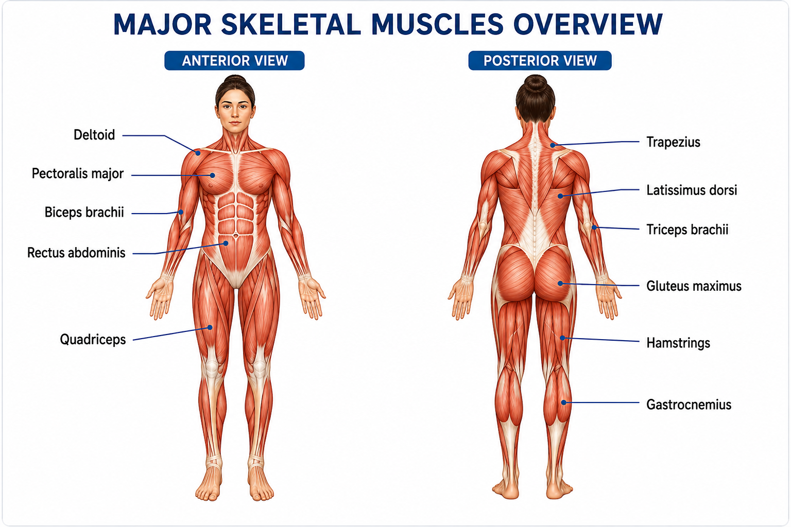
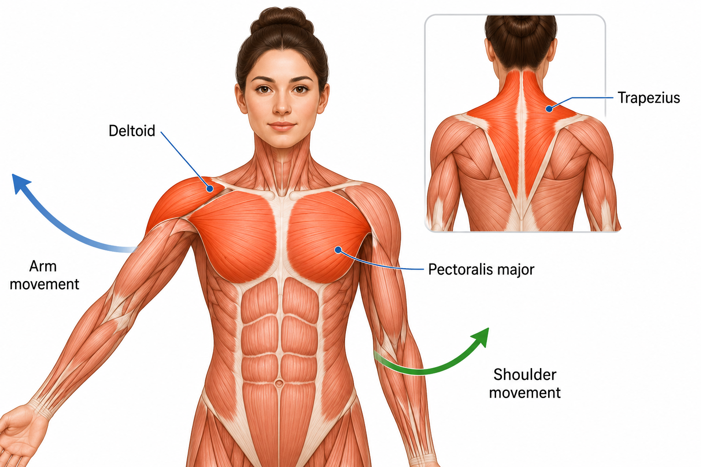
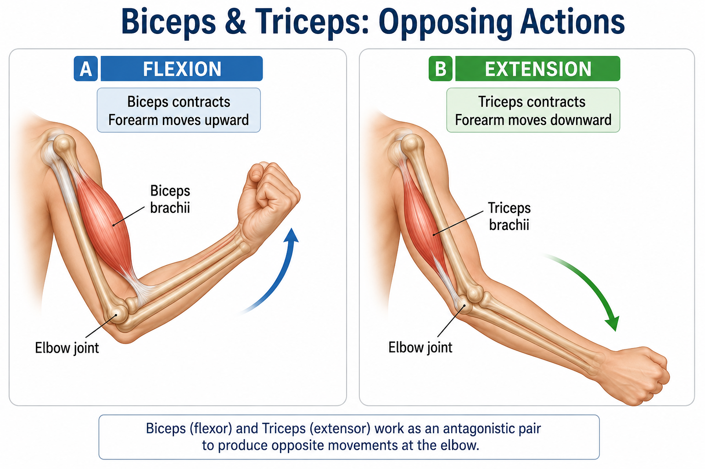
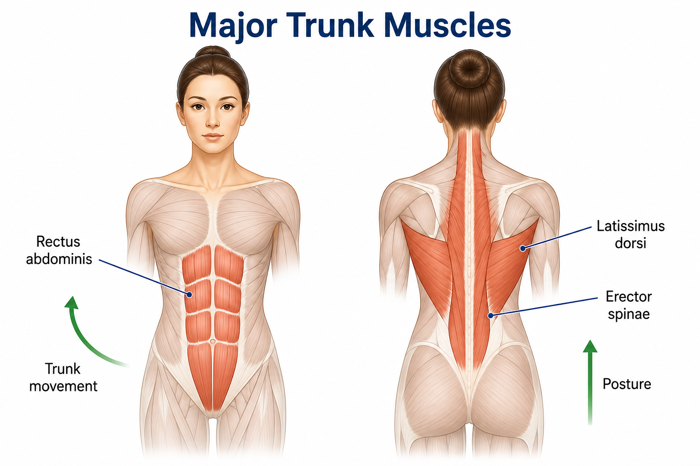
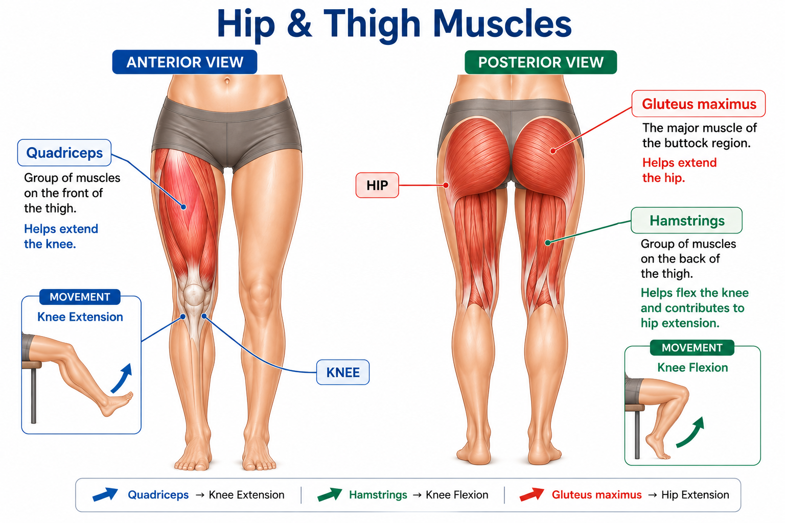
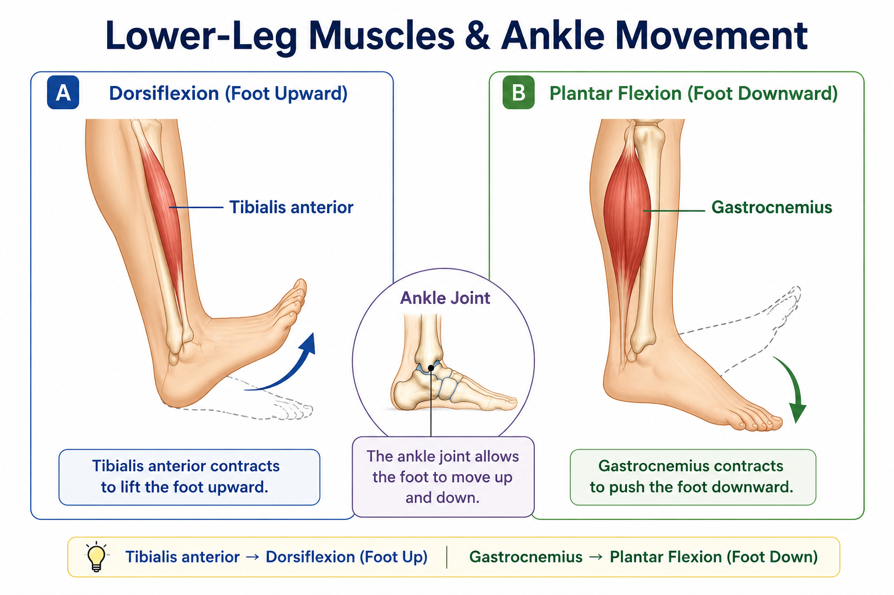
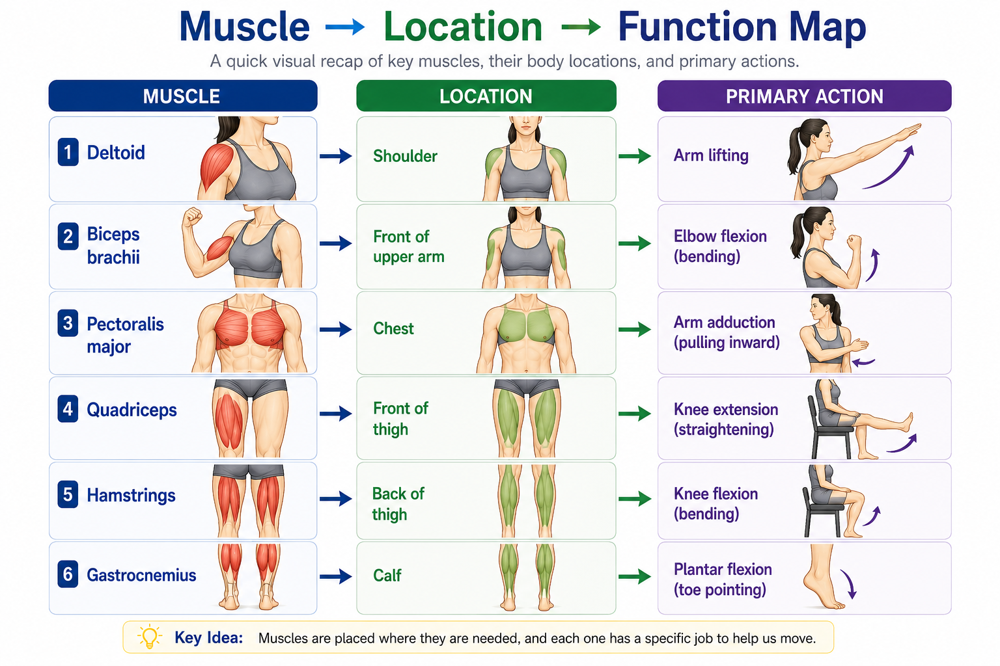
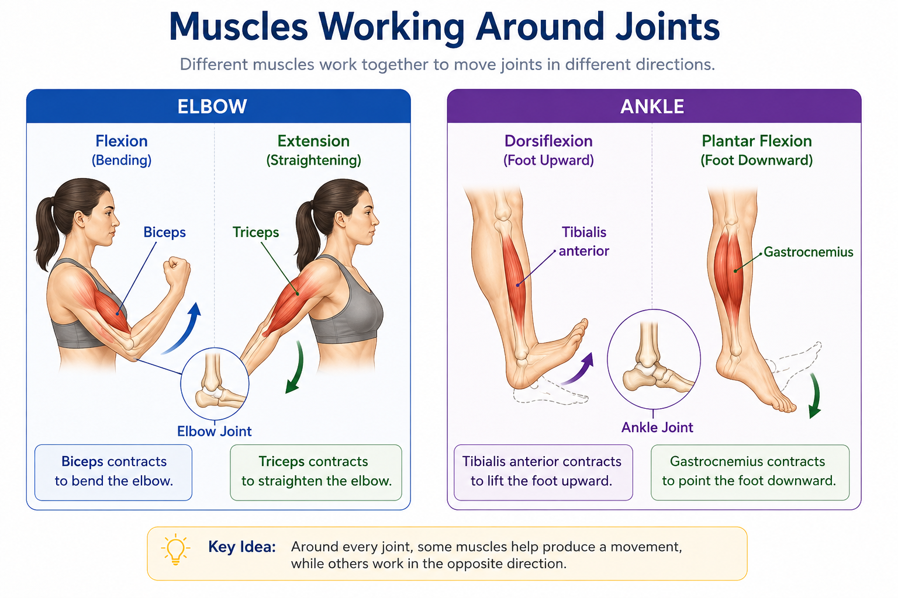
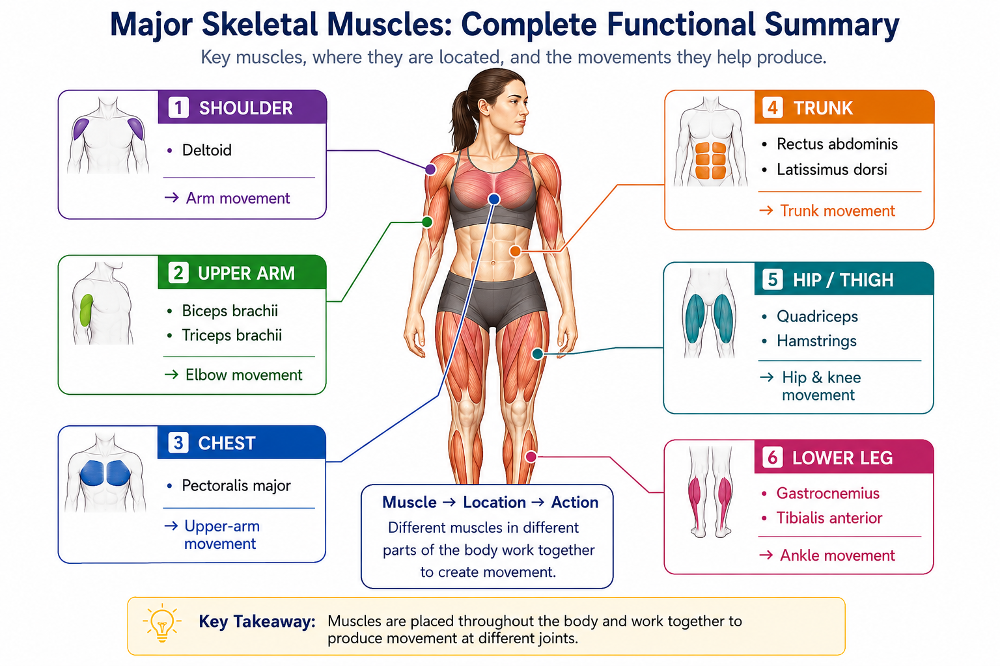

Deltoid
Location: Shoulder
Primary function: Helps lift the arm away from the body.
Anatomy • Lesson 4.4
The human body contains many skeletal muscles, and each muscle has a specific location and function. Some muscles move the limbs, while others help stabilize the body or move the trunk. In this lesson, we focus on major skeletal muscles that are commonly used to understand human movement.
Skeletal muscles are distributed throughout the body. Different muscles have different locations, attachments, and primary actions.
Learning a muscle becomes easier when its name is connected with where it is located and what movement it helps produce.

Different skeletal muscles produce different movements depending on their location and attachments.
Muscles around the shoulder and chest help move the upper limb and stabilize the shoulder region.
Location: Shoulder
Primary function: Helps lift the arm away from the body.
Location: Chest
Primary function: Helps move the upper arm toward and across the body.
Location: Upper back and neck
Primary function: Helps move and stabilize the shoulder blade.

Figure 4.2 — Shoulder & Chest Muscles
Shoulder and chest muscles help control movements of the upper limb and shoulder girdle.
The upper arm contains muscles that act mainly at the elbow.
Located on the front of the upper arm. It helps flex the elbow.
Located on the back of the upper arm. It helps extend the elbow.

Biceps and triceps demonstrate how opposing muscles can produce opposite movements at a joint.
Several large muscles of the trunk help move and stabilize the body.
Located at the front of the abdomen. Helps flex the trunk.
A broad muscle of the back that helps move the upper arm.
Runs along the back and helps extend and stabilize the vertebral column.

Trunk muscles help control posture and movements of the torso.
The muscles around the hip and thigh are important for movements of the hip and knee.
The major muscle of the buttock region. Helps extend the hip.
A group of muscles on the front of the thigh. Helps extend the knee.
A group of muscles on the back of the thigh. Helps flex the knee and contributes to hip extension.

Large muscles of the hip and thigh generate powerful movements of the lower limb.
The lower-leg muscles help control movements of the ankle and foot.
A large muscle of the calf that helps produce plantar flexion at the ankle.
Located along the front of the lower leg. Helps dorsiflex the foot.

Lower-leg muscles control important movements of the ankle and foot.
A useful way to remember major muscles is to connect each muscle with its location and primary action.

| Muscle | Main Location | Primary Function |
|---|---|---|
| Deltoid | Shoulder | Lifts the arm |
| Pectoralis major | Chest | Moves the upper arm toward the body |
| Biceps brachii | Front of upper arm | Elbow flexion |
| Triceps brachii | Back of upper arm | Elbow extension |
| Rectus abdominis | Abdomen | Trunk flexion |
| Latissimus dorsi | Back | Moves the upper arm |
| Gluteus maximus | Buttock | Hip extension |
| Quadriceps | Front of thigh | Knee extension |
| Hamstrings | Back of thigh | Knee flexion |
| Gastrocnemius | Calf | Plantar flexion |
| Tibialis anterior | Front of lower leg | Dorsiflexion |
Muscles rarely act in isolation. Movement at a joint often depends on several muscles working together.
Some muscles contribute to a particular movement, while opposing muscles can produce the opposite movement.

Biceps: contributes to flexion.
Triceps: contributes to extension.
Tibialis anterior: contributes to dorsiflexion.
Gastrocnemius: contributes to plantar flexion.
Movement depends on coordinated activity among muscles acting around joints.
The major muscles studied in this lesson are distributed throughout the body and perform different actions.

Learn each muscle by connecting its name, location, and main action.
Learn each muscle by connecting its name, location, and main action.
| Term | Meaning |
|---|---|
| Deltoid | Major shoulder muscle |
| Biceps brachii | Muscle on the front of the upper arm |
| Triceps brachii | Muscle on the back of the upper arm |
| Quadriceps | Muscle group on the front of the thigh |
| Hamstrings | Muscle group on the back of the thigh |
| Gluteus maximus | Major muscle of the buttock region |
| Gastrocnemius | Major calf muscle |
| Tibialis anterior | Muscle on the front of the lower leg |
| Flexion | Movement that decreases the angle at a joint |
| Extension | Movement that increases the angle at a joint |
| Dorsiflexion | Upward movement of the foot at the ankle |
| Plantar flexion | Downward movement of the foot at the ankle |
Major skeletal muscles are distributed throughout the body, and each has one or more important actions.
Understanding a muscle becomes easier when three things are connected:
Ready to check what you remember?
Practice Quiz →